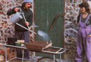

This chart shows average dates for sowing, germination, pricking out, and final garden transplanting relative to the average date of the last spring frost. The germina tion times, in days, are shown in parentheses; prick-out dates are marked with an X. (Kohlrabi, leeks, lettuce, and onions do not need to be pricked out.) Note well: This chart is no more than an approximation: Actual times will vary greatly depending on your climate and gardening practices. You and your experience are the best guides.